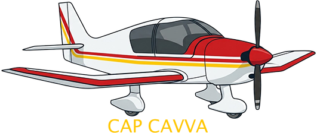

—
Profil vertical

Saisissez la clé de votre compte CAVVA. Elle est enregistrée localement sur cet ordinateur et sert à récupérer le brief de la séance.
Extrait toute la base d'aéroports de MSFS 2024 via SimConnect. MSFS 2024 doit être lancé avec un vol en cours. L'opération peut durer plusieurs minutes.
…
0 / 0
Reconstruit la base mondiale de navaids (VOR/NDB) de MSFS 2024 par traversance du réseau d'airways. MSFS 2024 doit être lancé avec un vol en cours. L'opération peut durer plusieurs minutes.
…
0 / 0
Les données d'élévation semblent déjà installées. Re-télécharger l'archive et remplacer les fichiers existants ?
…
—
Les espaces viennent de l'export XML du SIA, gratuit après création d'un compte sur son site (produit « Données aéronautiques XML », 0,00 €). Déposez le fichier XML_SIA_aaaa-mm-jj.xml dans le dossier prévu, puis convertissez-le ici.
…
Le plan de vol en cours sera abandonné. Continuer ?
Cap CAVVA
Le poste de l'organisateur du vol de club : espaces aériens français en vectoriel, zones actives de la séance, plan de vol et suivi en direct.
Ce logiciel est distribué sous licence GPL-3.0 ou ultérieure.
Le code source de cette application est disponible sur GitHub.
Copyright 2026 Cyril MILANI.
Little Navmap / atools — Alexander Barthel (albar965)
L'extraction des navaids depuis MSFS 2024 (extract-navaids-msfs.js) s'inspire directement de la méthode du projet atools / Little Navmap d'Alexander Barthel.